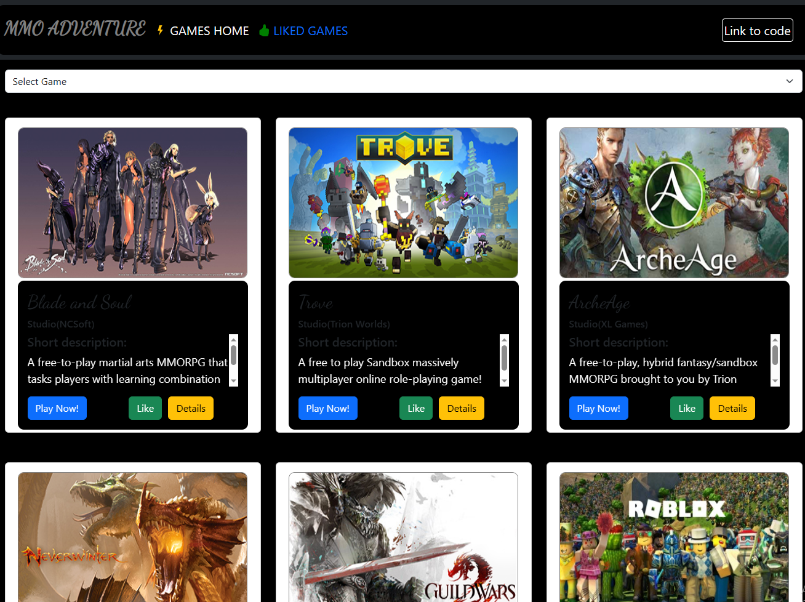
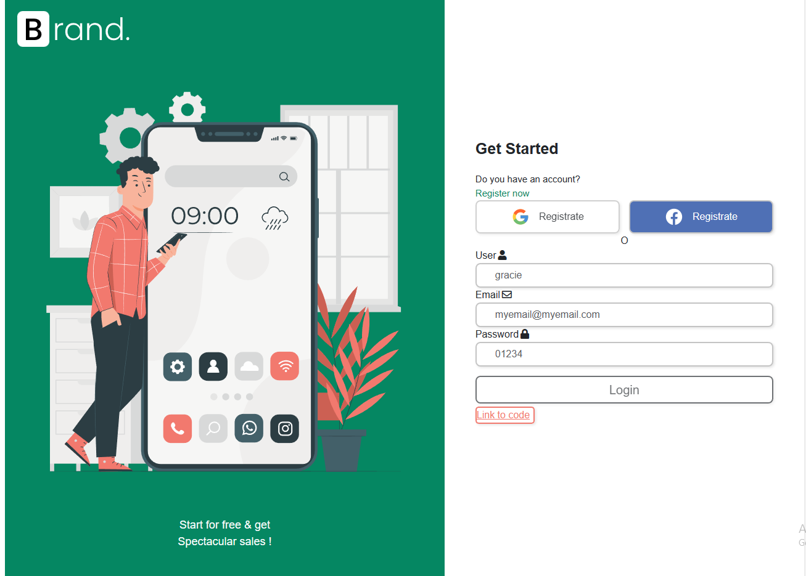
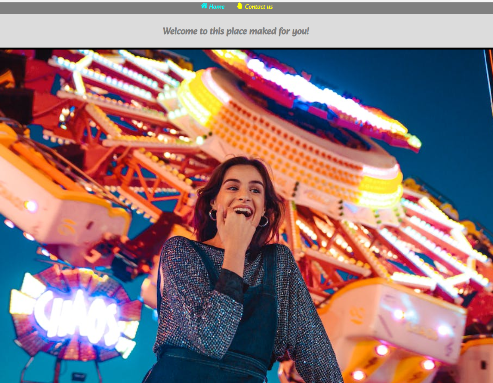

Jose Luis Riquelme
Welcome to my website
Mining engineer turnning into TI, passionate about learn and create exiting things
Ingeniero en minas reconvirtiendo mi carrera al mundo TI, apasionado por el conocimiento y el crear cosas entretenidas
About me
My experience working as a team and leading teams work, are valuable tools in any field of knowledge. I know how important its to make the work eficiently and the importance of an clear comunication throught the team, that is the key to be successful i any task than we need to acomplished and of course all that in a halthy and respectful work environment.
Mis experiencias trabajando en equipo o liderando estos, son herramientas valiosas para cualquier empresa. Conozco la importancia de realizar un trabajo de manera eficiente mediante una comunicacion clara con los demas, todo esto en una ambiente de trabajo respetusos y saludable.
I know about
Javascript React Sass Bootstrap GitGithubThreejs
Projects/proyectos
MMO_Adventure (React/Bootsrap)
An individual project maked using React, Bootstrat and consuming an Api Rest.That its about to different free to plays MMO games
Un proyecto individual en el cual use React, Bootstrap y se consume una API Rest mediante el metodo fetch(), si te gustan los MMO esta pagina te encantara
Brand (React/Bootsrap)
An brief project maked using React, Bootstrat to learn how to validate forms
Un breve proyecto en el cual aprendimos la base de como validar un formulario
Funny Enterpsise (React/Bootsrap)
An Individual project to learn how to work React-router
Un proyecto individual en el cual empezamos a ver React-router
For more project, check my Git-hub
Para mas proyectos visita mi Git-hub
Work History
Jefe de turno(2019-2021)
I worked as team leader for an a important Canadian company leading a team work of fifty persones for two years, that labors were developed principally in the operation in a mine called Florida, located in RM, Chile. That was challenging and gratifying as well, work in an minner operation have many challenges and i developed my carrier as minning enginier and for that am very greatefully.
Trabaje como jefe de turno por un lapso de dos anos para una importante empresa minera presente en Chile, debia liderar un grupo de mas menos 15 personas, era un trabajo bastante demandante y gratificador a la vez, fue un periodo de mucho aprendizaje y de desarrollo de habillidades como la comunicacion, liderazgo, eficiencia, estoy muy agradecido de haber podido trabajar alli.
Teacher(2021-2023)
I worked as teacher for different places and institutions in a freelance way about my knowledge in differents subjects of mining engineering .
He trabajado como profesor para diferentes intituciones mediante charlas y cursos de forma freelance en los campos del conocimiento que manejo sobre ingenieria en minas y ciencias basicas en general.
To know more about my experience, check my Linkedin
Para saber mas sobre my experiencia, visita mi Linkedin
Thanks for reading
Jose Luis Riquelme